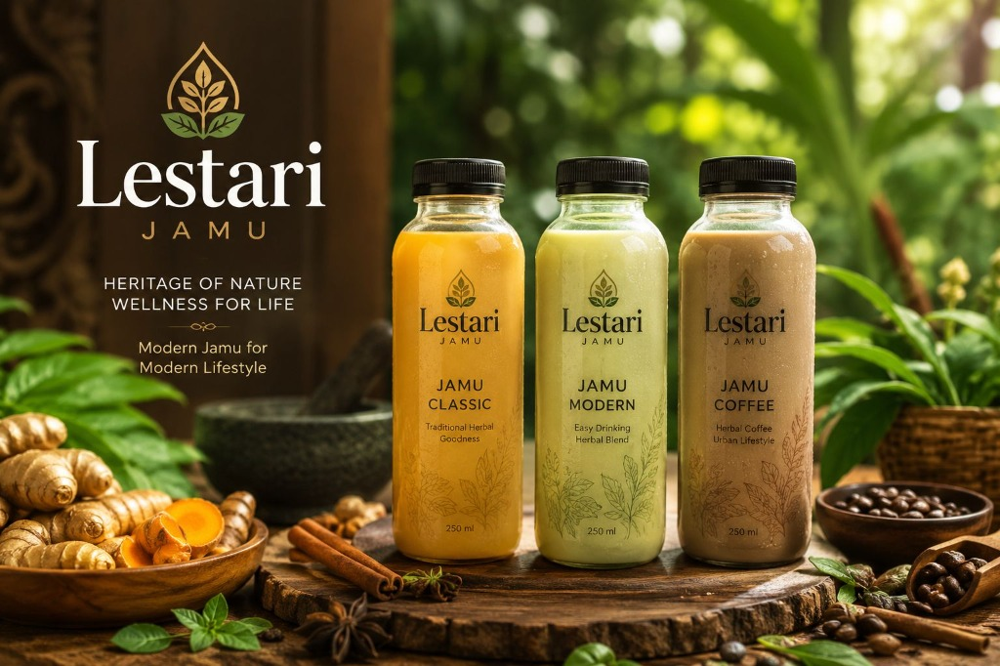
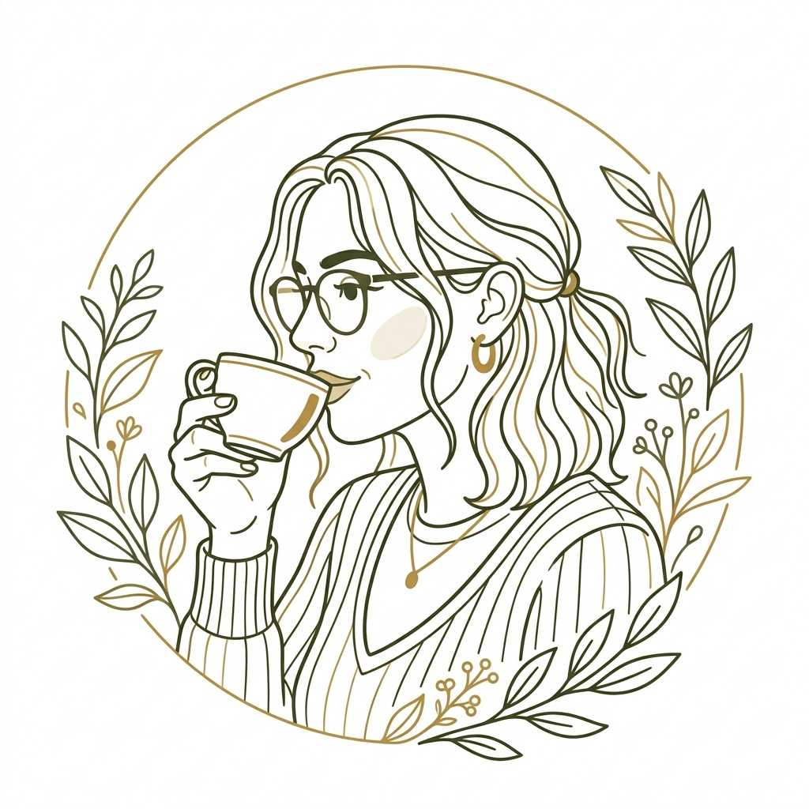

Jamu Lestari
Muhammad Farrel El Haq | Program Studi Manajemen, Universitas Darussalam Gontor

KONSEP BISNIS
Jamu Lestari adalah bisnis minuman herbal yang mengembangkan jamu tradisional Indonesia menjadi produk minuman yang lebih modern, praktis, menarik, dan relevan dengan gaya hidup konsumen masa kini.
Konsep ini memanfaatkan bahan herbal lokal sebagai bahan utama, kemudian mengolahnya menjadi minuman siap konsumsi dengan cita rasa dan kemasan yang lebih sesuai dengan preferensi konsumen modern.
Bahan Herbal Utama
Keunggulan Utama
- Produksi fleksibel & mudah dikembangkan
- Rasa yang disesuaikan dengan lidah modern
- Harga kompetitif bagi mahasiswa & pekerja
MASALAH & SOLUSI
! Tantangan Modern
-
✓
Persepsi Buruk: Jamu dianggap pahit dan kuno oleh generasi muda.
-
✓
Kurang Praktis: Penyajian tradisional tidak cocok bagi masyarakat urban.
-
✓
Higienitas: Standar kebersihan sering dipertanyakan.
💡 Solusi Jamu Lestari
Jamu Lestari melakukan modernisasi produk melalui inovasi rasa, kemasan, dan cara penyajian.
Jamu Classic
mempertahankan karakter jamu tradisional.
Jamu Modern
memberikan pengalaman rasa yang lebih modern.
Jamu Coffee
mengombinasikan karakter herbal dengan kopi.
EVOLUSI PERILAKU KONSUMEN
Momentum Emas Minuman Fungsional
Minuman Sintetis
Ketergantungan pada minuman tinggi gula dan bahan kimia sintetis.
Sensasi rasa manis instan dan kepraktisan tanpa memedulikan dampak kesehatan jangka panjang.
Transisi Herbal
Pergeseran gaya hidup; pencarian daya tahan tubuh melalui bahan alami dan organik.
Pencegahan penyakit, imunomodulator, dan kembali ke bahan-bahan alami tradisional (back to nature).
Minuman Fungsional
Kebutuhan akan produk yang menyehatkan (UNESCO Heritage 2023) namun dikemas secara higienis, praktis, dan ringan.
Jamu RTD (Ready-To-Drink) premium yang rendah kalori, berkhasiat klinis, dan mudah dibawa ke mana saja.
Jamu Lestari lahir tepat di titik temu antara kekayaan biodiversitas lokal dan tren 'Healthy Lifestyle' urban.
PORTOFOLIO PRODUK & HARGA
Jamu Klasik
Rasa autentik tradisional untuk pecinta herbal murni.
Menu Klasik:
- Kunyit Asam Original
- Beras Kencur Keraton
- Wedang Jahe Merah
- Temulawak Madu
Jamu Modern
Kombinasi herbal inovatif dengan rasa yang lebih ringan.
Menu Modern:
- Golden Milk Latte (Kunyit)
- Rosella Sparkling
- Ginger Lemonade Blend
- Matcha Temulawak
Jamu Kopi
Inovasi unik: Perpaduan khasiat jamu dan energi kopi.
Menu Kopi:
- Espresso Jahe Merah
- Kopi Susu Gula Aren & Kencur
- Americano Spiced
- Cinnamon Coffee Blend
ARSITEKTUR PRODUK
Menjangkau Setiap Segmen Preferensi Rasa
Jamu Classic
Rp18.000Bahan: Jahe, Kunyit, Temulawak.
Fungsi Strategis: "Untuk puristan dan konsumen yang mencari khasiat herbal murni."
Jamu Modern
Rp20.000Bahan: Serai, Kayu Manis, Gula Aren.
Fungsi Strategis: "Entry-level untuk generasi muda; cita rasa lebih ringan, segar, dan mudah diterima."
Jamu Coffee
Rp22.000Bahan: Paduan kopi dan ekstrak rempah.
Fungsi Strategis: "Integrasi mulus ke dalam gaya hidup coffee-shop urban dan pekerja muda."
ANALISIS SWOT: INTERNAL
+ Strengths (Kekuatan)
- Bahan Alami & Lokal: Memastikan biaya bahan baku terkontrol dan kualitas segar.
- Inovasi Rasa: Jamu Kopi adalah Unique Selling Point (USP) yang sangat kuat.
- Kemasan Praktis: Format RTD memenuhi kebutuhan gaya hidup masyarakat urban.
- Margin Tinggi: Margin kontribusi rata-rata Rp12.335/botol (sangat sehat).
- Weaknesses (Kelemahan)
- Masa Simpan: Produk alami tanpa pengawet memiliki umur simpan yang lebih pendek (tantangan logistik).
- Brand Awareness: Sebagai pemain baru, butuh biaya promosi besar untuk melawan persepsi jamu "kuno".
- Ketergantungan Supplier: Sangat bergantung pada kualitas panen rempah lokal.
ANALISIS SWOT: EKSTERNAL
🛡️ Threats (Ancaman)
- Kompetitor Minuman Modern: Saingan dari kedai kopi kekinian atau boba yang sudah memiliki loyalitas merek.
- Fluktuasi Harga Bahan Baku: Harga jahe/kunyit yang tidak stabil bisa mengganggu margin laba.
- Edukasi Pasar: Membutuhkan waktu lama untuk mengubah stigma jamu bagi non-konsumen.
📈 Opportunities (Peluang)
- Tren Wellness: Meningkatnya kesadaran kesehatan pasca-pandemi (Permintaan produk imun booster).
- Pasar Milenial/Gen Z: Kelompok yang mencari minuman sehat namun tetap estetik dan "Instagrammable".
- Ekspansi Digital: Potensi besar melalui pesan antar online (GoFood/GrabFood/ShopeeFood).
Geser taskbar untuk membandingkan Peluang & Ancaman
STRATEGI STP: MENYASAR 'URBAN MILLENNIAL & GEN Z'
Target Persona Card

Geografis
Kota Medan & Kawasan Ekonomi Sekitarnya.
Taktik Penetrasi:
- Distribusi intensif di area urban & pusat bisnis Medan.
- Kemitraan kafe lokal & hub komunitas modern.
Demografis
18–35 Tahun (Mahasiswa, Pekerja Muda, Keluarga Muda).
Taktik Penetrasi:
- Pricing strategy yang terjangkau bagi pelajar & pekerja pemula.
- Kemasan RTD praktis siap minum untuk mobilitas tinggi.
Psikografis
Peduli kesehatan, bangga produk lokal, aktif di sosmed, menghargai kepraktisan.
Taktik Penetrasi:
- Kampanye digital "Bangga Lokal" di TikTok & Instagram.
- Highlight khasiat fungsional (energi, imun, kesegaran).
Jamu Lestari diposisikan bukan sebagai obat tradisional, melainkan sebagai Minuman Herbal Modern.
⭐ Keunggulan Kompetitif
Menggabungkan nilai historis jamu dengan estetika, cita rasa, dan pengalaman konsumsi gaya hidup urban.
Nilai Historis & Warisan
Menjaga orisinalitas khasiat resep leluhur Nusantara.
Estetika Modern & RTD
Desain botol premium yang elegan & praktis dibawa ke mana saja.
Cita Rasa Urban
Rasa ringan tanpa pahit berlebih, serta paduan unik kopi.
PROYEKSI PENDAPATAN
Parameter Finansial Utama
Ringkasan indikator kelayakan investasi bisnis Jamu Lestari.
BEP Operasional
Target tercapai pada Bulan ke-6 operasional.
Target Margin Laba
Rasio profitabilitas berkisar antara 25% - 35%.
Proyeksi ROI
Pengembalian modal penuh diproyeksikan dalam 18 Bulan.
Rincian Peningkatan Pendapatan
Analisis matematis pertumbuhan pendapatan per tahun dengan presisi 20% YoY Growth.
Tahun 1 ke Tahun 2
+ Rp94.080.000 (+20%)
Didorong oleh ekspansi kemitraan B2B & distribusi outlet.
Tahun 2 ke Tahun 3
+ Rp112.896.000 (+20%)
Didorong oleh optimalisasi kapasitas pabrik & rute logistik.
Total Pertumbuhan 3 Tahun
+ Rp206.976.000 (+44% akumulatif)
Breakdown Nilai Penjualan per Varian
Pemisahan nilai penjualan berdasarkan target komposisi produk (40:40:20).
| Varian (Komposisi) | Tahun 1 | Tahun 2 | Tahun 3 |
|---|---|---|---|
| Classic (40%) | Rp188.160.000 | Rp225.792.000 | Rp270.950.400 |
| Modern (40%) | Rp188.160.000 | Rp225.792.000 | Rp270.950.400 |
| Coffee (20%) | Rp94.080.000 | Rp112.896.000 | Rp135.475.200 |
KESEHATAN FINANSIAL
Metrik Profitabilitas Tinggi dengan Risiko Terukur
(atau Rp 12.798.800). Hanya membutuhkan 32,65% dari kapasitas produksi 2.000 botol untuk mencapai titik impas.
Margin of Safety: 67,35%.
Payback Period: 4,8 Bulan
Analisis Break Even Point
💡 Titik impas tercapai hanya dengan sepertiga kapasitas — memberikan ruang sangat luas untuk pertumbuhan.
Analisis Profitabilitas
💡 Model bisnis berbiaya variabel rendah (bahan lokal) menghasilkan margin tinggi & pengembalian modal sangat cepat.
Return on Investment
💡 Investasi Rp 60 juta akan kembali dalam kurang dari 5 bulan — bisnis langsung menghasilkan laba bersih positif.
ROADMAP BISNIS
Persiapan
Riset resep rasa modern, pengadaan bahan baku lokal, & perancangan kemasan food-grade.
Launching
Soft launching terpusat di area kampus & aktivasi agresif kampanye media sosial.
Akselerasi
Meningkatkan kapasitas produksi untuk mencapai target 1.500 cup per bulan.
Ekspansi
Berpartisipasi dalam event/bazar berskala besar dan membuka peluang kemitraan B2B.
STRUKTUR ORGANISASI
Klik setiap jabatan untuk melihat detail peran & tanggung jawab
Direktur Utama
👑 PimpinanManajer Operasional
⚙️ OperasionalManajer Keuangan
💰 FinansialPilih Jabatan
Klik salah satu kartu jabatan di sebelah kiri untuk melihat detail peran, tanggung jawab, dan keahlian yang dibutuhkan.
Direktur Utama
👑 Pimpinan UtamaBertanggung jawab penuh atas visi, misi, dan arah pengembangan usaha, serta mengambil keputusan strategis tertinggi.
Tugas Utama
- Menetapkan visi & misi perusahaan
- Mengambil keputusan strategis
- Mengelola hubungan investor & mitra
- Evaluasi kinerja keseluruhan
Manajer Operasional
⚙️ Divisi OperasionalMengelola kelancaran kegiatan operasional harian, mengatur rantai produksi jamu, dan mengontrol stok bahan baku secara efisien.
Tugas Utama
- Mengawasi proses produksi harian
- Mengatur rantai pasokan bahan baku
- Quality control produk
- Manajemen stok & inventaris
Manajer Keuangan
💰 Divisi FinansialMencatat seluruh arus kas masuk-keluar, menyusun laporan laba-rugi, dan mengelola administrasi serta gaji karyawan.
Tugas Utama
- Pencatatan arus kas masuk/keluar
- Penyusunan laporan laba-rugi
- Administrasi & payroll
- Perencanaan anggaran & budgeting
SINTESIS KELAYAKAN
Mengapa Jamu Lestari Siap Dieksekusi?
Pasar
Operasional
Finansial
Dijalankan
Tervalidasi Pasar
Tren Healthy Lifestyle bertemu dengan produk RTD praktis. SOM riil 24.000 botol/tahun dengan strategi STP yang tajam di Sumatera Utara.
Kesiapan Operasional
Rantai pasok bahan lokal yang melimpah, proses produksi terstandar, dan struktur organisasi efisien.
Keunggulan Finansial
Payback Period 4,8 bulan dan ROI 332,40% membuktikan model bisnis asset-light dengan profitabilitas tinggi.
Sinergi Kelayakan
Jamu Lestari mengintegrasikan validasi pasar yang kuat, operasional mandiri yang efisien, dan metrik finansial berisiko rendah. Proyek ini sangat layak dieksekusi secara instan.
Terima Kasih
Mari Lestarikan Budaya, Tingkatkan Kesehatan.
Muhammad Farrel El Haq
Manajemen - Universitas Darussalam Gontor